The Graph, Effects, Controllers and Buses
| Home | Contents | Synth Catalog | Previous: Synths | Next: MIDI |
The Graph is a window used to interconnect, or patch, synths together. It is accessed by the rightmost tab on the main application window. The image below shows a new graph before any synths have been added.
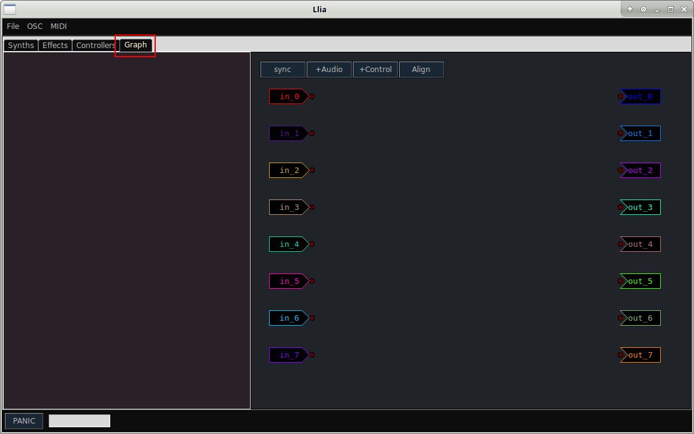The large window to the right is the graph proper. The blank area on the left is for information. As the mouse moves over graph icons, information about them are displayed in this area.
Initially the graph contains 2 vertical columns. The column on the left, with labels in_0, in_1, in_2, etc, are audio input buses. Buses in_0 and in_1 are the left and right inputs to the primary sound card. The additional inputs are only connected if the system has additional inputs.
Similarly the right column represents outputs to the sound card. out_0 and out_1 are the primary left and right outputs of the primary sound card. The additional outputs are only connected if they are present on the sound card.
Llia was developed on a system with a single set of stereo inputs and outputs. The connectivity of the additional buses has not been verified.
Practical Example
For illustration we'll process the MASA organ through a flanger and then reverb. From the Effects tab select and add first the Rumklang reverb and then the Flngr effects.
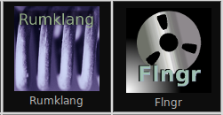Now switch to the Synths tab and add a MASA organ.
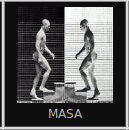When new items are added to the graph they are initially placed at random locations, however they may be freely dragged to new locations. Initially the graph should look something like this. The two effects are connected to both input and output buses and MASA has a single output connected to the out_0 bus.
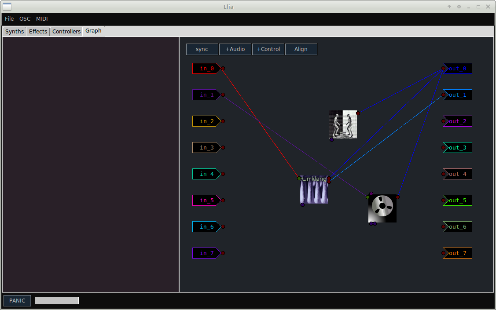At this point MASA should be active on MIDI channel 1 but it has not yet been connected to the effects. To make the connections we need to create two audio buses using the +Audio button near the top. As with synths, the initial position of bus icons is random. After adding the buses the graph should look something like this:
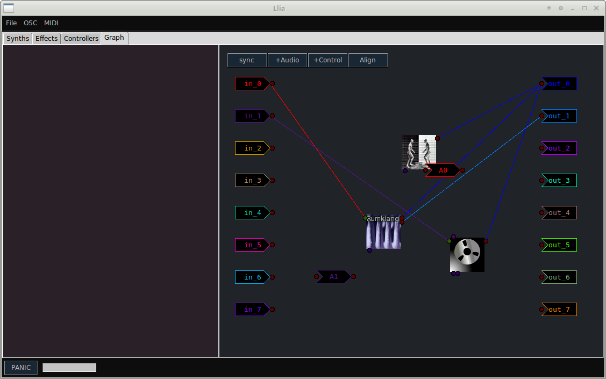It does not matter which bus is used for the connections and after dragging things around a bit the graph now like this:
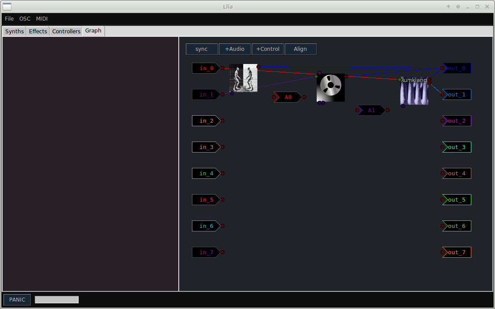Audio outputs appear as small circles (or ports) on the upper right hand side of synth icons. Notice that as the mouse enters one of these ports it is highlighted and all other ports to which it may connect are also highlighted. The info area is also updated to show information about the specific port.
Drag a line from the output port of MASA to the input (left side) port of bus A0.
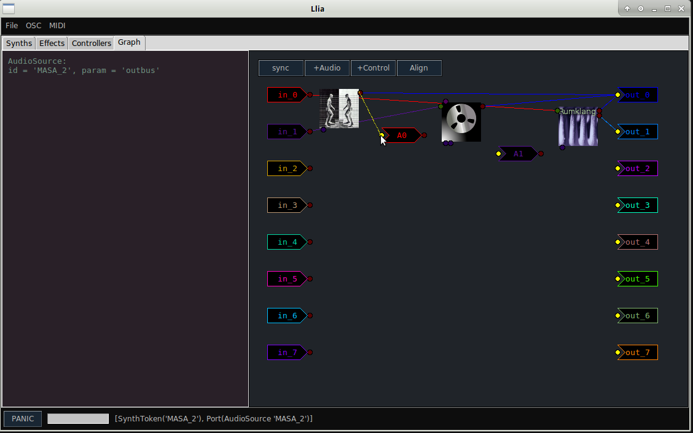Now make the additional connections to the flanger and reverb. Notice that when a synth port is connected to a bus it's previous connection is severed.
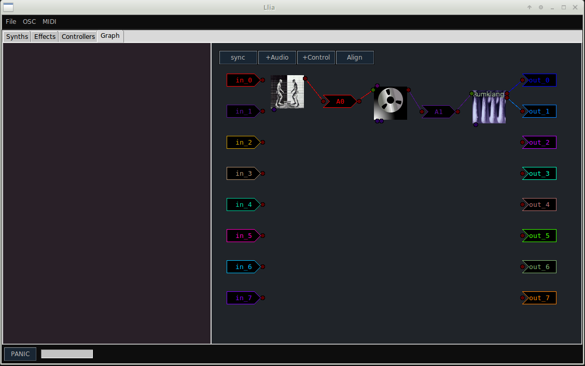At this point you should have a flanged and reverberated organ, however the initial flanger and reverb programs are set to bypass. To change this go to the group window, select the Flgr and Rumklang tabs, and select one of the available programs.
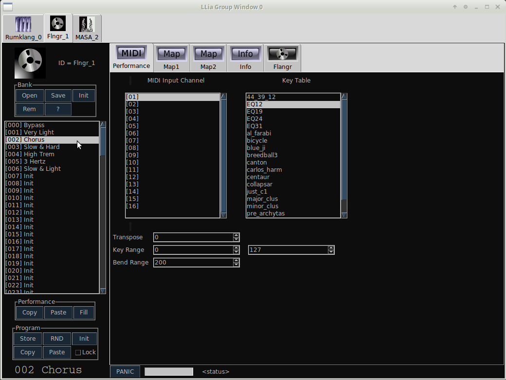Controllers
It may be that we wish to have the organ vibrato synced to the flanger. We can do this using an LFO control synth. Control synths are added and connected much the same way as audio synths except that Control buses are used.
From the Controllers tab of the main window add a copy of LFO1.
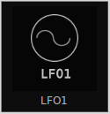Back on the Graph window click "+Control" to add a new control bus.
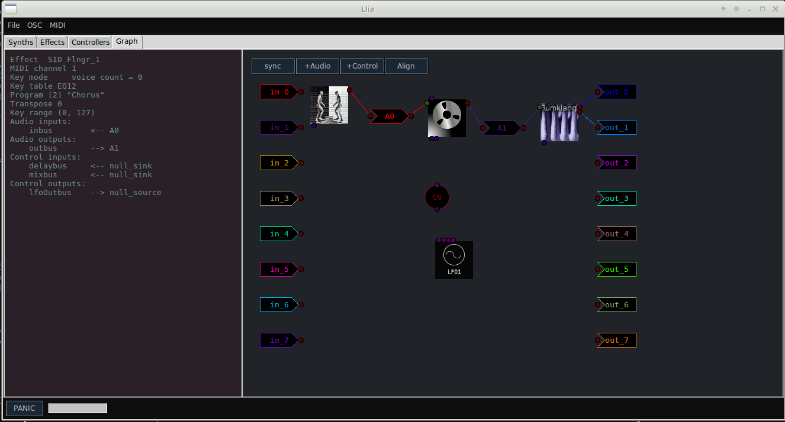Control output ports are located at the top of icons with inputs on the bottom. Control buses have a circular appearance instead of the chevron shape of audio buses.
Notice that LFO1 has several outputs, this is because in reality it is three LFOs in one. You can use the info area while mousing over the output ports to determine which one you want. At times the port names may be cryptic, for this case we want the "outbus" port. Drag a connection from the outbus port of LFO1 to the input port of the control bus. Now drag another line from the top of the control bus to the control input of MASA. Finally drag a line from the control bus to an input port on the flanger. The flanger has two control inputs, select the one on the left called "delaybus". The graph should look something like this:
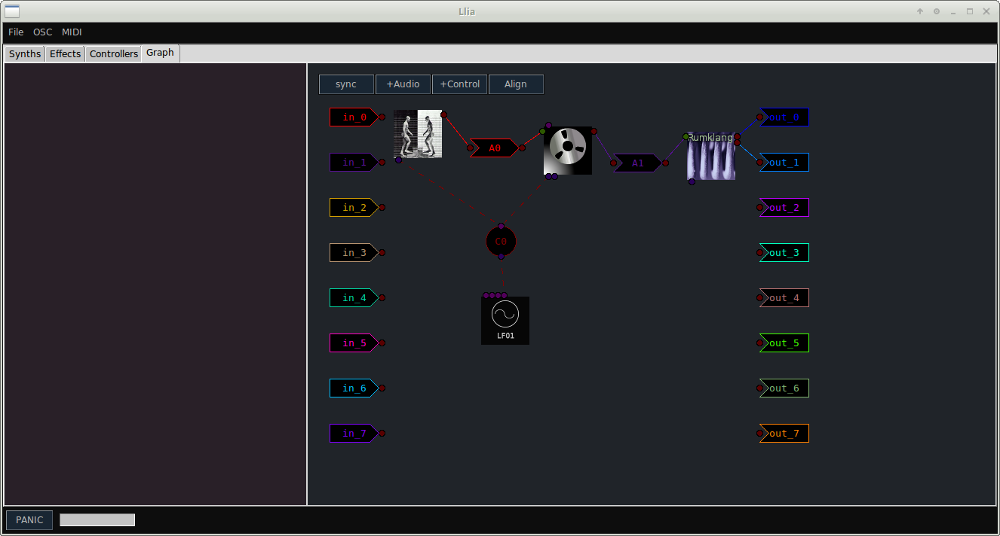If you now play this patch there will probably be no difference. The reason is most synth programs have external control turned off by default. You can fix this by visiting the synth editors back on the Group window.
The terminology may not be consistent between different synth types. For the flanger adjust the "External" slider, For MASA, use the "Scale" slider located in the External section.
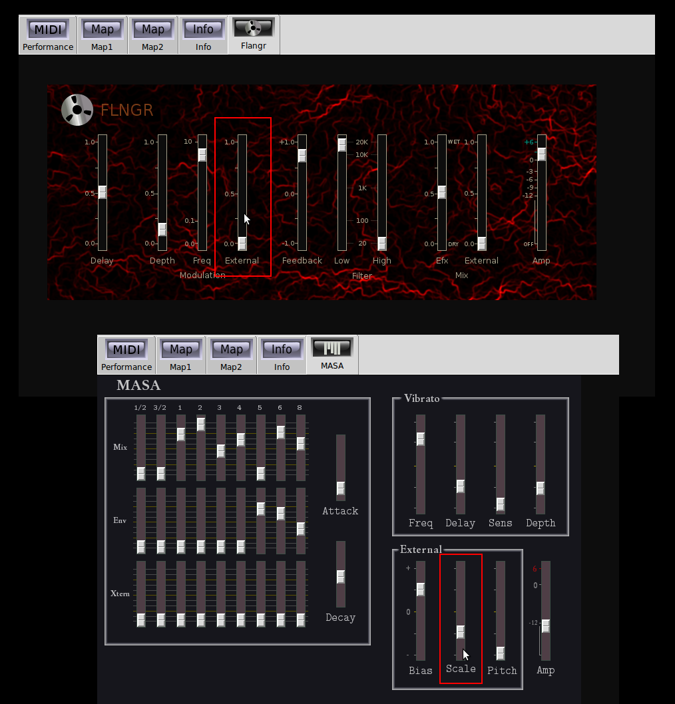Notice though that the flanger has a control output for it's internal LFO. We could have used it instead of LFO1 to achieve much the same effect. It is not as flexible as LFO1 but if all you need is a simple sine wave it would be the better choice.

| Home | Contents | Synth Catalog | Previous: Synths | Next: MIDI |